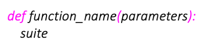

Creating functions
Contents
2.1. Creating functions#
We have previously seen what functions are and how to call them. Functions are a good way to structure your code into useful chunks, each chunk being responsible for a particular task. This makes functions are a good way to create reusable code. In this section we are going to learn how to create a function of our own from scratch. Functions in Python are defined in the following way:
where parameters is an optional list of zero or more comma separated parameters, and suite is one or more statements. The example code below defines a simple
function which is named hello. The function does not take any arguments, and it just prints “Hello World!” back.
def hello():
print("Hello World!")
The definition of a function will not execute the code in it. To execute the code in a function, you would need to call the function first:
hello()
Hello World!
The example below is another simple function, but this time, the function defines two parameters: num1 and num2. The
function below also returns the value of the sum of the two numbers (arguments) passed into the function by using the
return keyword.
def sum_two_numbers(num1, num2):
return num1 + num2
Again, to execute the code inside the function we would need to call it. The sum_two_numbers() function expects two arguments, below is
an example.
print(sum_two_numbers(1, 1))
2
If you do not supply two arguments, the sum_two_numbers() would raise an error:
sum_two_numbers(1)
---------------------------------------------------------------------------
TypeError Traceback (most recent call last)
Input In [5], in <cell line: 1>()
----> 1 sum_two_numbers(1)
TypeError: sum_two_numbers() missing 1 required positional argument: 'num2'
Programming concept
A parameter is the variable defined in the function definition inside the parentheses, for example, num1 and num2 are parameters
in the sum_two_numbers() function defined above.
An argument is the value that is passed into the function when it is called. In the call sum_two_number(1, 1) 1 and 1 are arguments.
2.1.1. Default argument values#
You can assign default values to arguments in your functions, such that, if a user decides to call your function without
specifying all the arguments, the arguments that were not passed would have already a predefined value. For example, in the code
below, sum_two_numbers() assigns default values of 0 to parameters num1 and num2.
def sum_two_numbers(num1=0, num2=0):
return num1 + num2
Using the sum_to_numbers() function as defined in the code above, the sum_two_number() function can be called in
different ways which are shown below:
print(sum_two_numbers()) #1
print(sum_two_numbers(0, 0)) #2
print(sum_two_numbers(0)) #3
0
0
0
The three function calls above return the same result, that of 0. Line 1 makes use of both default values for num1 and num2.
Line 2 passes the values of 0 to num1 and 0 to num2 which happen to be the same as their default values. Line 3
calls sum_two_numbers() with only one argument. The argument passed is assigned to the first parameter defined in the function, in this
case this is num1. num2 will use its default value since no argument was passed for num2.
2.1.2. Positional vs keyword arguments#
print(sum_two_numbers(1, 4)) #positional arguments
print(sum_two_numbers(num1=1, num2=4)) #keyword arguments
print(sum_two_numbers(num2=4, num1=1)) #not recommended
5
5
5
The function calls above also return the same result, this time it is 5. However, the function calls above helps us understand
better the difference between positional and keyword arguments. Positional arguments are arguments that are passed without
specifying the name of the parameter in the call. The first line is an example of calling the sum_two_numbers() function
with positional arguments. Keyword arguments call functions using the name of the parameters in the form \(parameter = value\).
The second line is an example of calling the sum_two_numbers() function using keyword arguments. The third call is also an
example of the function call using keyword arguments. However, it is not recommended to call functions in this way as essentially line 3
is not following the same order the parameters were defined in the definition, which could lead to confusion.
The calls in the code below are all not recommended as they mix positional and keyword arguments in the same call. As a good practice, you should call functions using either positional arguments, or else using keyword arguments, but not both.
print(sum_two_numbers(1, num2=4))
print(sum_two_numbers(num1=1, 4)) #this raises an error
print(sum_two_numbers(1, num1=1)) #this raises an error
Input In [9]
print(sum_two_numbers(num1=1, 4)) #this raises an error
^
SyntaxError: positional argument follows keyword argument
Line 2 raises an error as you cannot have a keyword argument followed by a positional one. Line 3 also raises an error
as both arguments are using the same argument; in the first argument, 1 is assigned to num1 and the second argument is also assigning 1 to num1.
Exercise 2.1 (Exploring creating functions)
Level:
Use the sum_two_numbers() function:
a. What happens if you remove the return keyword from its definition?
b. Explore default argument values, positional and keyword arguments by trying the code above and calling the sum_two_numbers() function with different arguments.
Exercise 2.2 (The Fibonacci sequence function)
Level:
Rewrite the solution of Exercise 1.13 such that, you create a function fibonacci that takes parameter n as an input,
and returns the list of Fibonacci sequence numbers from 0 to n.
2.1.3. Documentation Strings#
Now that we know how to create functions, it is important that we start creating them using good programming practice. We should follow the definition of a function with docstrings. Docstrings is short for Python Documentation Strings. docstrings associate documentation with Python modules, functions and classes. To generate docstrings you need to use triple quotes as shown in the example below.
def sum_two_numbers(num1=0, num2=0):
"""
Returns the sum of two numbers.
:param num1: first number
:param num2: second number
:return: Returns the sum of num1 and num2.
"""
return num1 + num2
PyCharm automatically generates the name of the parameters and the return statement. Filling in the remaining details will ensure that we have documentation specified for the usage of our the function. When we run code, similarly to comments, docstrings do not have an effect on our code. But docstrings have the additional benefit of being associated with documentation, so always use docstrings to explain functions rather than comments.
To check out how the documentation created looks like, either include the help() function in your code using the name of the
function you have created and documented with docstrings as an argument. For example, help(sum_two_numbers). The other way
is to call pydoc from the terminal together with the name of the file where the function is saved, for example, if sum_two_numbers()
was saved in numbers.py, then run pydoc numbers.py in the terminal.